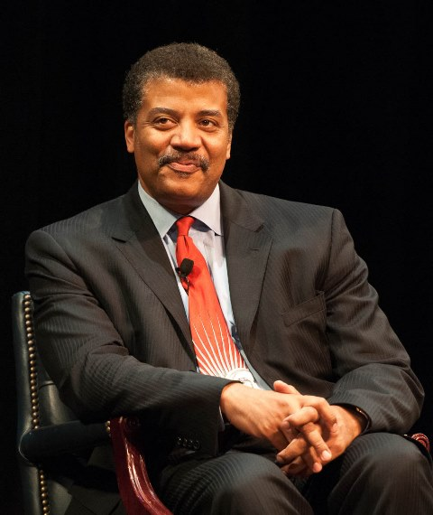

Professor Tyson on stage at Howard University, September 28, 2010
Neil Degrasse Tyson was born in, New York City on Octoboer 5th, 1958.
At the age of nine, he visited the Hayden Planetarium at the Rose Center for
Earth and Space at New York's, American Museum of Natural History, and from that
moment, he fostered an interest in astronomy that would eventually propel him to
become only one of around 1,000 astrophysicists on the planet.
- Education
- Graduated from the, Bronx High School of Science where he was editor-in-chief of the, Physical Science Journal
- Earned his bachelor's degree in Physics from Harvard University in 1980
- Earned his master's degree in Astronomy at the University of Texas as Austin in 1983
- Earned his master's degree in Astrophysics at Columbia University in 1989
- Earned his doctorate in Astrophysics at Columbia University in 1991
- Spent the next three years(1991-1994), as a postdoctoral research associate at, Princeton University
- Joined the Hayden Planetarium as a staff scientist in 1994
- Joined the Princeton faculty as a visiting research scientist and lecturer in 1994
- Became the director of the Hayden Planetarium and oversaw it's 210 million dollar reconstruction plan in 1996, and saw it the project come to fruition in 2000
- Books
- Merlin's Tour of the Universe(1989/1998)
- Univers Down to Earth(1994)
- Just Visiting This Planet(1998)
- One Universe: At Home in the Cosmos(2000)
- Cosmic Horizons: Astronomy at the Cutting Edge(2000)
- City of Stars: A New Yorker's Guide to the Cosmos(2002
- My Favorite Universe(12 part lecture series)
- Origins: Fourteen Billion Years of Cosmic Evolution - with Donald Goldsmith(2004/2014)
- The Sky is Not the Limit: Adventures of an Urban Astrophysicist(2000/2004)
- Death By Black Hole: And Other Cosmic Quandaries(2007/2014)
- The Pluto Files: The Rise and Fall of America's Favorite Planet(2009)
- Space Chronicles: Facing the Ultimate Frontier(2012)
- Research Publications
- Twarog, Bruce A.; Tyson, Neil D. (1985) "uvby Photometry of Blue Stragglers in NGC 7789" Astronomical Journal90: 1247
- Tyson, Neil D.; Scalo, John M. (1988) "Bursting Dwarf Galaxies: Implications for Luminosity Function, Space Density, and Cosmological Mass Density" Astrophysical Journal329: 618
- Tyson, Neil D. (1988) "On the Possibility of Gas-Rich Dwarf Galaxies in the Lyman-Alpha Forest" Astrophysical Journal (letters)329:L57
- Tyson, Neil D.; Rich, Michael (1991) "Radial Velocity Distribution and Line Strenghts of 33 Carbon Stars in the Galactic Bulge" Astrophysical Journal367: 547
- Tyson, Neil D.; Gal, Roy R. (1993) "An Exposure Guide for Taking Twilight Flatfields with Large Format CCDs" Astronomical Journal105" 1206
- Tyson, Neil D.; Richmond, Michael W.; Woodhams, Michael; Ciottie, Luca (1993) "On the Possibility of a Major Impact on Uranus in the Past Century" Astronomy and Astrophysics (Research Notes)275:630
- Schimdt, B. P., et al. (1994) "The Expanding Photospere Method Applied to SN1992am at cz=14600 km/s" Astronomical Journal107: 1444
- Wells L. A., et al. (1994) "The Type la Supernova 1989B in NGC3627 (M66)" Astronomical Journal108: 2233
- Hamuy, M., et al. (1996) "BVRI Light Curves for 29 Type ia Supernovae" Astronomical Journal112:2408
- Lira, P., et al. (1998) "Optical Light Curves of the Type IA Supernovae SN 1990N and 1991T"Astronomical Journal116: 1006
- Scoville, N., et al. (2007) "The Cosmic Evolution Survey (COSMOS): Overview"Astrophysical Journal Supplement172: 38
- Liu, C. T.; Capak, P.; Mobasher, B.; Paglione, T. A. D.; Scoville, N. Z.; Tribiano, S. M.; Tyson, N. D. (2008) "The Faint-End Slopes of Galaxy Luminosity Functions in the COSMOS Field" Astrophysical Journal Letters672: 108
- Filmography
- Stargate: Atlantis (2008): "Brainstorm" (himself)
- NOVA: The Pluto Files (2010): Documentary (presenter)
- The Inexplicable Universe: Unsolved Mysteries (2012): 6-part lecture series from the, The Great Courses
- Gravity Falls (2014): animated childrens cartoon (Waddles the pig)
- Brooklyn Nine-Nine (2015): action comedy TV series (cameo)
- Star Talk (2015) TV series (host)
- Lazer Team (2016): comedy (himself)
- Ice Age: Collision Course (2016): animated movie (Neil deBuck)
- Zoolander No. 2 (2016): comedy (himself)
- Awards
- 2001 Medal of Excellence, Columbia University, New York City
- 2004 NASA Distinguished Public Service Medal
- 2005 Science Writing Award
- 2007 Klopsteg Memorial Award
- 2009 Douglas S. Morrow Public Outreach Award from the Space Foundation for significant contributions to public awareness of space programs
- 2009 Isaac Asimov Award from the Aerican Humanist Association
- 2014 Critics' Choice Television Award for Best Reality Show Host (Cosmos)
- 2014 Dunlap Prize
- 2015 Public Welfare Medal from the National Academy of Sciences
- 2015 Cosmos Award, Planetary Society
- Honors
- 2000 Sexiest Astrophysicist Alive, People Magazine
- 2001 asteroid named; 13123 Tyson, renamed from Asteroid 1994KA by the International Astronomical Union
- 2001 The Tech 100, voted by editors of Crain's Magazine to be among the 100 most influential technology leaders in New York
- 2004 Fifty Most Important African-Americans in Research Science
- 2007 Harvard 100: Most Influential Harvard Alumni magazine, Cambridge, Massachusetts
- 2007 the Time 100, voted by the editors of Time Magazine as one of the 100 most inluential persons in the world
- 2008 Discover Magazine selected him as one of "the 10 Most Influential People in Science
- Honorary Doctorates
- 1997 York College, City University of New York
- 2000 Ramapo College, Mahwah, New Jersey
- 2000 Dominican College, Orangeburg, New York
- 2001 University of Richmond, Richmond, Virginia
- 2002 Bloomfield College, Bloomfield, New Jersey
- 2003 Northeastern University, Boston, Massachusetts
- 2004 College of Staten Island, City University of New York
- 2006 Pace University, New York City
- 2007 Williams College, Williamstown, Massachusetts
- 2007 Worcest Polytechnic Institute, Worcester, Massachusetts
- 2008 University of Pennsylvania, Philadelphia, Pennsylvania
- 2010 University of Alabama in Huntsville, Huntsville, Alabama
- 2010 Rensselaer Polytechnic Institute, Troy, New York
- 2010 Eastern Connecticut State University, Willimantic, Connecticut
- 2011 Gettysburg College, Gettysburg, Pennsylvania
- 2012 Mount Holyoke College, South Hadley, Massachusetts
- 2012 Western New England University, Springfield, Massachusetts
- 2015 University of Massachusetts-Amherst, Amherst, Massachusetts